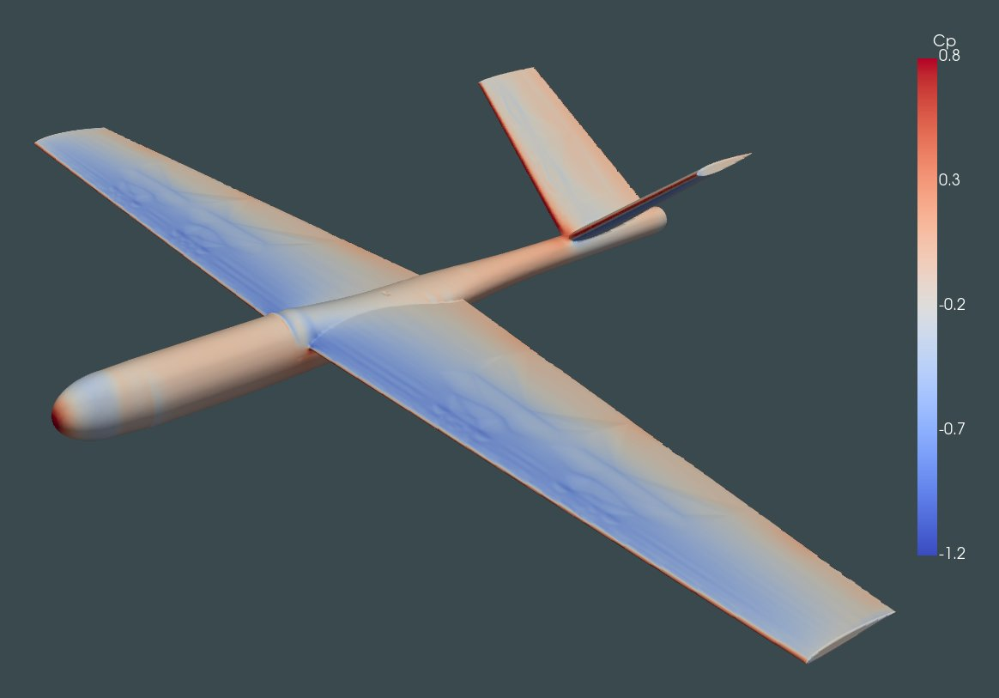
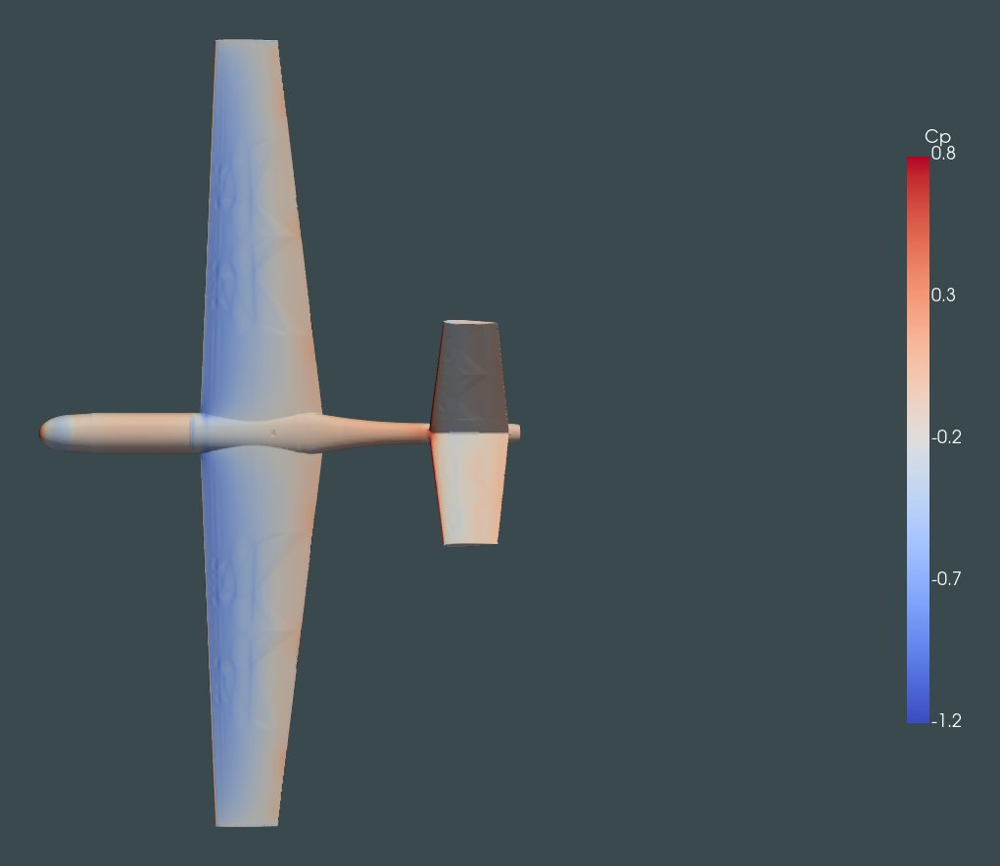
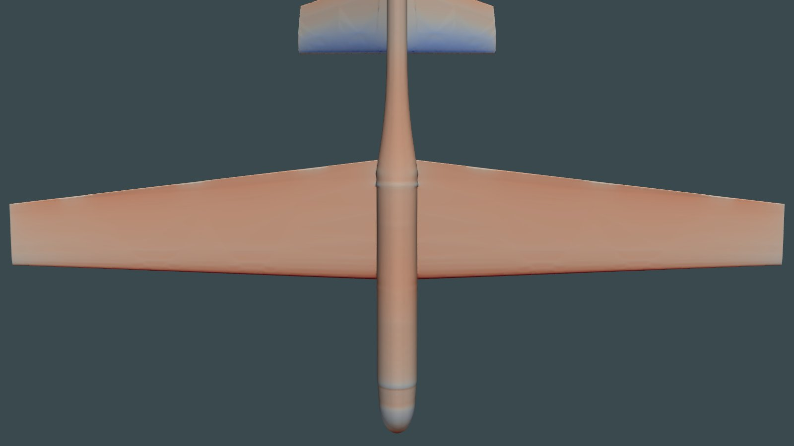
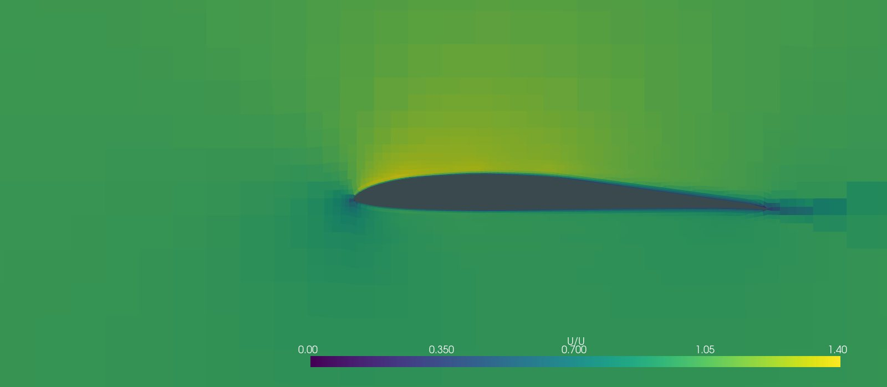

OpenFOAM CFD of the full aircraft
A 3D RANS simulation of the complete airframe at 13.5 m/s. The wing is efficient, and stretching the fuselage in V11 turned an unstable first design into a comfortably stable one.

OpenFOAM results for the V11 geometry at 13.5 m/s and 2°. Blue on the surface is suction, red is stagnation: suction covers the whole upper wing and weakens toward the tips.
The first CFD run, on V10b, found the aircraft statically unstable. Our design tool had ignored the wing's downwash on the tail. V11 stretches the fuselage 68 mm, which moves the wing, tail and motor aft, and enlarges the V-tail by 7%.
| V10b | V11 | |
|---|---|---|
| CL / CD at 2° | 0.474 / 0.0263 | 0.448 / 0.0265 |
| L/D at 2° | 18.0 | 16.9 |
| Neutral point | about 317 mm | about 387 mm |
| Static margin | −3.4% (CG 323.5 mm) | 13.7% (CG 361.5 mm) |
| Fuselage | 850 mm | 918 mm |
Moving only the wing would have put the carbon spar through the Raspberry Pi, and a bigger tail on its own reached only 4.6%. Stretching the fuselage behind the battery keeps the nose, camera and battery where they are and moves everything behind them aft. Full story in the design log.
V11 at 13.5 m/s. Pitching moments are about the centre of gravity at x = 361.5 mm.
| Angle of attack | CL | CD | L/D | Cm |
|---|---|---|---|---|
| 2° | 0.448 | 0.0265 | 16.9 | +0.002 |
| 6° | 0.742 | 0.0527 | 14.1 | −0.038 |
About 17% less lift than our design tool at the same angle, so the aircraft trims at a slightly higher angle for the same speed.
The pitching moment falls as the angle rises, so the aircraft returns to trim after a disturbance. A vortex-lattice model calibrated on this CFD gives 14.0%.
The model treats the whole boundary layer as turbulent, which overstates skin friction. The real value is probably a little lower; flight tests will tell.



- Forces are integrated from surface pressure and wall shear in our own script.
- The model assumes turbulent flow everywhere, which overstates skin-friction drag.
- The surface is clean: no hinge gaps, hatch seams, gimbal or propeller.
- A first pass meshed straight from the print files, with gaps and no boundary-layer cells, gave L/D 11.6 and was discarded.
Neither aircraft has flown yet. Figures are design estimates from CFD and calculation, not flight-test data.